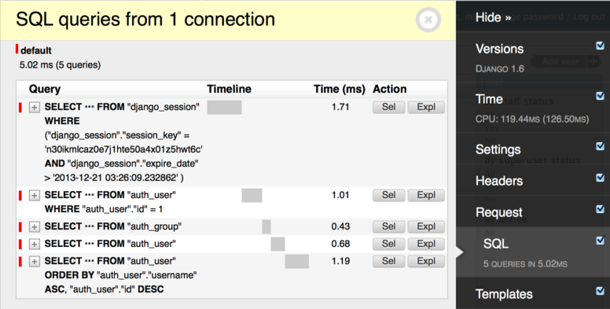

Django Tips & Tricks #10 - Log SQL Queries To Console
Django ORM makes easy to interact with database. To understand what is happening behing the scenes or to see SQL performance, we can log all the SQL queries that be being executed. In this article, we will see various ways to achieve this.
Using debug-toolbar
Django debug toolbar provides panels to show debug information about requests. It has SQL panel which shows all executed SQL queries and time taken for them.

When building REST APIs or micro services where django templating engine is not used, this method won't work. In these situations, we have to log SQL queries to console.
Using django-extensions
Django-extensions provides lot of utilities for productive development. For runserver_plus and shell_plus commands, it accepts and optional --print-sql argument, which prints all the SQL queries that are being executed.
./manage.py runserver_plus --print-sql ./manage.py shell_plus --print-sql
Whenever an SQL query gets executed, it prints the query and time taken for it in console.
In [42]: User.objects.filter(is_staff=True) Out[42]: SELECT "auth_user"."id", "auth_user"."password", "auth_user"."last_login", "auth_user"."is_superuser", "auth_user"."username", "auth_user"."first_name", "auth_user"."last_name", "auth_user"."email", "auth_user"."is_staff", "auth_user"."is_active", "auth_user"."date_joined" FROM "auth_user" WHERE "auth_user"."is_staff" = true LIMIT 21 Execution time: 0.002107s [Database: default] <QuerySet [<User: anand>, <User: chillar>]>
Using django-querycount
Django-querycount provides a middleware to show SQL query count and show duplicate queries on console.
|------|-----------|----------|----------|----------|------------| | Type | Database | Reads | Writes | Totals | Duplicates | |------|-----------|----------|----------|----------|------------| | RESP | default | 3 | 0 | 3 | 1 | |------|-----------|----------|----------|----------|------------| Total queries: 3 in 1.7738s Repeated 1 times. SELECT "django_session"."session_key", "django_session"."session_data", "django_session"."expire_date" FROM "django_session" WHERE ("django_session"."session_key" = 'dummy_key AND "django_session"."expire_date" > '2018-05-31T09:38:56.369469+00:00'::timestamptz)
This package provides additional settings to customize output.
Django logging
Instead of using any 3rd party package, we can use django.db.backends logger to print all the SQL queries.
Add django.db.backends to loggers list and set log level and handlers.
'loggers': { 'django.db.backends': { 'level': 'DEBUG', 'handlers': ['console', ], },
In runserver console, we can see all SQL queries that are being executed.
(0.001) SELECT "django_admin_log"."id", "django_admin_log"."action_time", "django_admin_log"."user_id", "django_admin_log"."content_type_id", "django_admin_log"."object_id", "django_admin_log"."object_repr", "django_admin_log"."action_flag", "django_admin_log"."change_message", "auth_user"."id", "auth_user"."password", "auth_user"."last_login", "auth_user"."is_superuser", "auth_user"."username", "auth_user"."first_name", "auth_user"."last_name", "auth_user"."email", "auth_user"."is_staff", "auth_user"."is_active", "auth_user"."date_joined", "django_content_type"."id", "django_content_type"."app_label", "django_content_type"."model" FROM "django_admin_log" INNER JOIN "auth_user" ON ("django_admin_log"."user_id" = "auth_user"."id") LEFT OUTER JOIN "django_content_type" ON ("django_admin_log"."content_type_id" = "django_content_type"."id") WHERE "django_admin_log"."user_id" = 4 ORDER BY "django_admin_log"."action_time" DESC LIMIT 10; args=(4,)
[2018/06/03 15:06:59] HTTP GET /admin/ 200 [1.69, 127.0.0.1:47734]
These are few ways to log all SQL queries to console. We can also write a custom middleware for better logging of these queries and get some insights.
Comments
Comments powered by Disqus